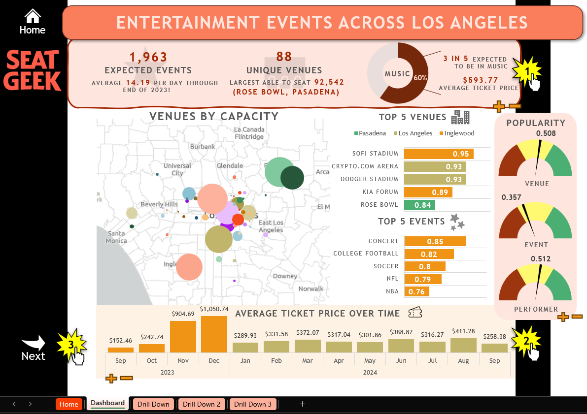
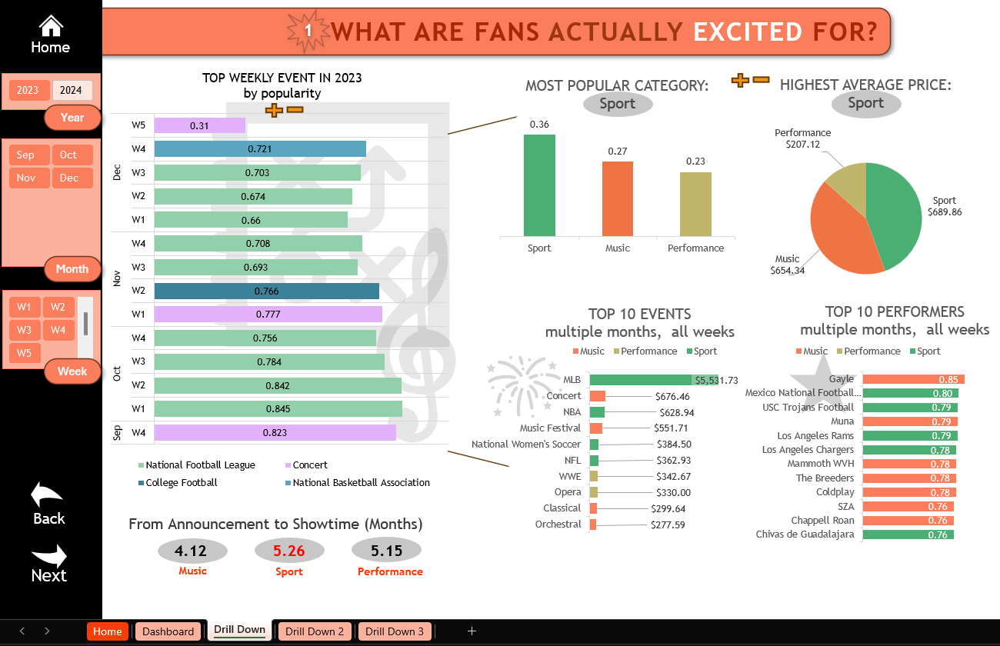
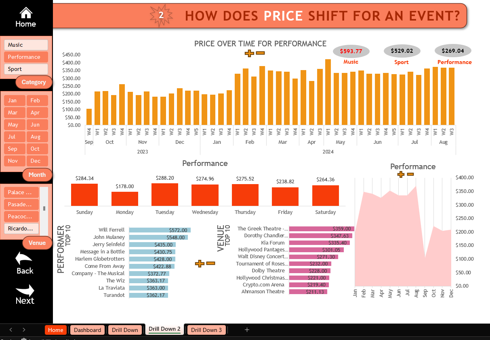
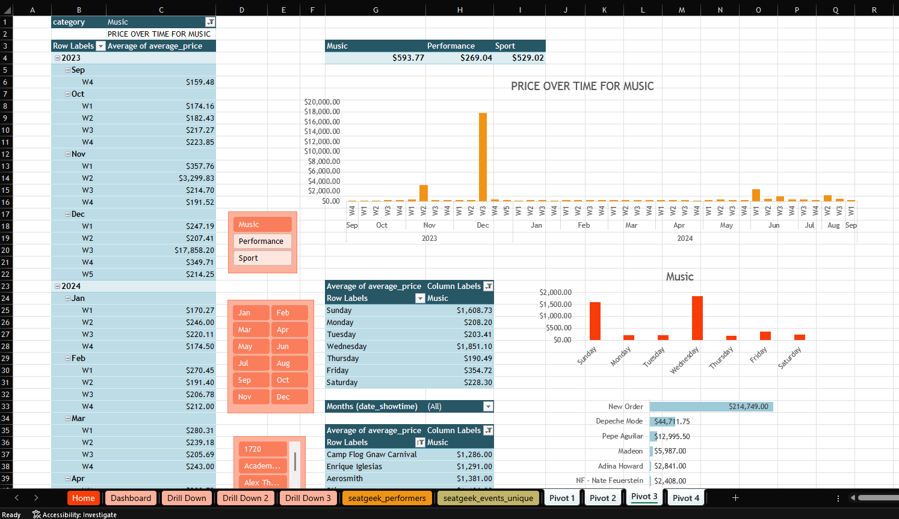
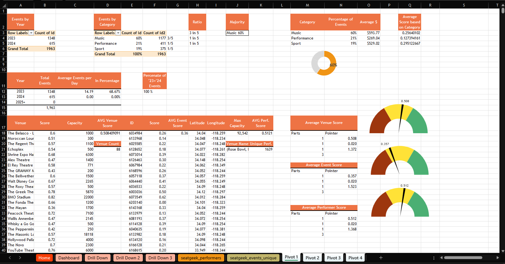

Goal
An in-depth exploration of Los Angeles' entertainment scene, leveraging data from SeatGeek to weave
a narrative that delves into event popularity, venue significance, and pricing dynamics, providing
insights into the heartbeat of LA's vibrant entertainment pulse.
Outcome
This project encapsulates a comprehensive exploration of Los Angeles's entertainment scene through
a detailed analysis of event data. By dissecting the intricate relationships between event types,
pricing dynamics, venue influence, and temporal patterns, a vivid picture of the city's entertainment
pulse emerges. The Excel dashboard serves as a storytelling medium, providing a user-friendly
interface that not only presents data but also provokes questions and curiosity.
Key actionable insights from this analysis can guide:
Event Organizers in understanding when to announce events for maximum impact, and how pricing
strategies might differ based on the type of event and venue.
Marketers in identifying peak periods for specific events, aiding in more targeted promotional campaigns.
Venue Owners in understanding their standing and influence in attracting audiences and how
to enhance the venue experience further.
View the dashboard
on my Github,

The Process
It began by sourcing event data for Los Angeles through the SeatGeek API, focusing on a diverse range of entertainment
categories. After a detailed data cleaning and processing phase in Python, the refined dataset was imported into Excel.
Here, advanced Excel functions like PivotTables, XLOOKUP, and conditional formatting were employed to dissect the data,
uncovering patterns in event types, pricing dynamics, and venue influences. The analysis was then visualized in a
narrative-driven dashboard, guiding users through a journey of LA's entertainment scene and culminating in
actionable insights and recommendations.

- A first drill down into understanding live events from the view of 'scores' which attribute estimated sales
volumes at the event, performer, venue level.

- A drill down specifically around Price and it's impact across various aspects of event data such as venue,
performer, and over time.


- Invidial worksheets were leveraged to organize the dashboard and individual drill downs, this is one example of it.
Leveraging pivot tables, and pivot charts to refine the visual needed before moving it to its final location.
Data Analysis Tools: The project's analysis was intricately carried out using Excel, leveraging a diverse range of functions and features. Key tools and functions include:
- PIVOT TABLES for data summarization and categorization.
- DATA VALIDATION for creating interactive dropdown menus to guide user navigation.
- VLOOKUP & XLOOKUP for cross-referencing and data retrieval across tables.
- AVERAGE, AVERAGEIFS, COUNTIFS to calculate metrics and filter data based on specific criteria.
- Text manipulation through LEFT, MID, RIGHT, CONCATENATE.
- Macros & VBA for automation and enhanced workbook interactivity.
- DATE FUNCTIONS like MONTH, YEAR, DAY to dissect and understand time-based trends.
- Various charting tools, from bar charts to scatter plots, to visualize the data and craft the narrative.
Key Insights Derived:
- Music events, in terms of volume, lead the entertainment sector, yet demand intricacies are shaped by both the artist and the venue characteristics.
- Event prices display seasonality, with distinct trends appearing during festive periods and at the onset of summer.
- The prominence of venues in determining event allure was evident, with specific venues distinctly influencing demand and attendance.
Some future considerations:
- Deeper Dive into Outliers: A focused analysis on events that deviate significantly from the norm, like those with exceptionally high prices or popularity scores, to understand the unique factors driving their success.
- External Factors Analysis: Integrate external datasets like social media trends, citywide events, or tourism data to see how they influence entertainment demand.
- Demographic Analysis: By pairing with demographic or audience data, one could analyze preferences by age, gender, or other factors, offering a deeper understanding of the audience landscape.
- Feedback Loop: Sharing the dashboard with actual event organizers, marketers, or venue owners for feedback can offer new perspectives and refinement areas.
- Regular Updates: As with any dynamic sector, the entertainment scene will evolve. Periodic data refreshes and analyses can track these changes, ensuring the insights remain relevant and timely.
- Integration with Other Data Platforms: Explore the possibility of combining this data with other platforms like Spotify for music events or sports analytics tools for sports events to offer a more holistic view.
Go to top.